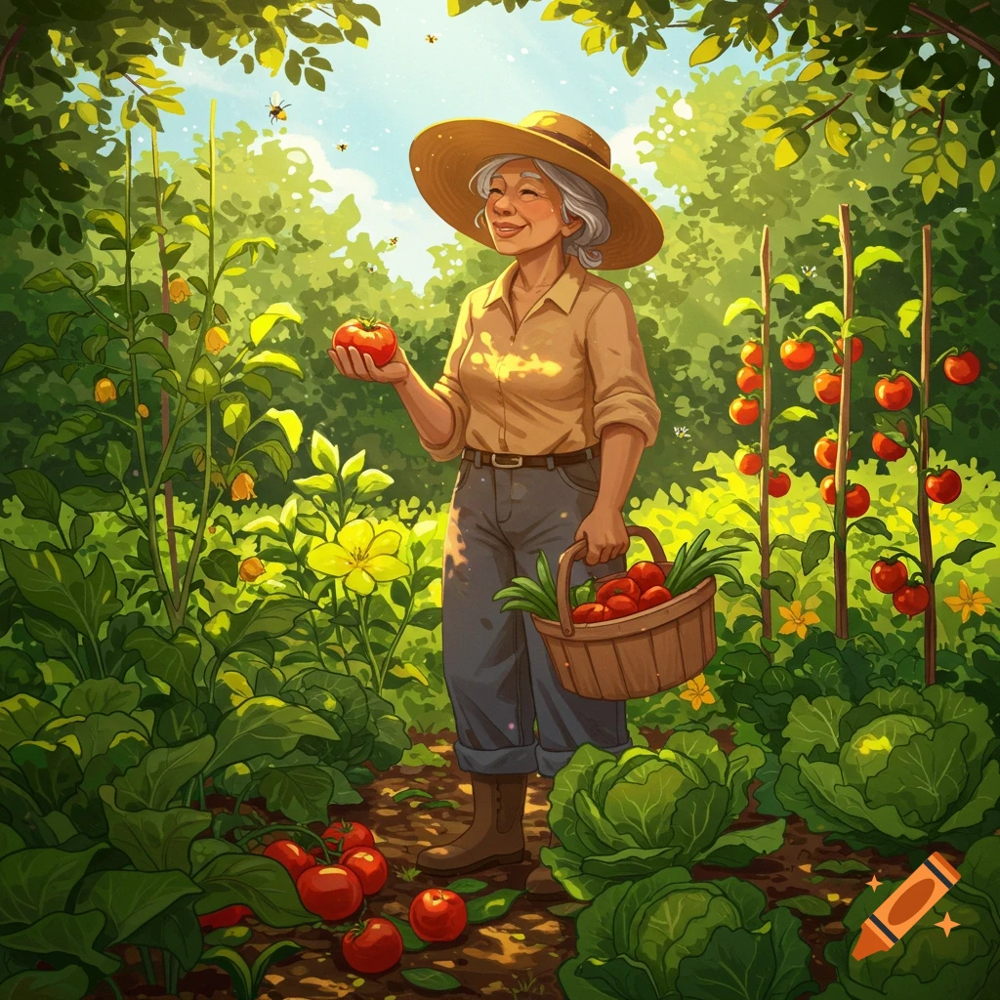

Menu
Browse Our Products
Jar of Jams
- Strawberry Jam
- Blueberry Jam
- Peach Jam
- Guava Jam
- Pomegranate Jam
- Lemon Jam
- Orange Jam
Note: Jams are best for door front delivery
Dried Fruit
- Dried Strawberry
- Dried Blueberry
- Dried Peach
- Dried Guava
- Dried Pomegranate
- Dried Lemon
- Dried Orange
Note: Dried Fruits are best for door front delivery
Fresh Fruits
- Fresh Strawberry
- Fresh Blueberry
- Fresh Peach
- Fresh Guava
- Fresh Pomegranate
- Fresh Lemon
- Fresh Orange
- Sugar Cane
Note: Fresh Fruits are best for pickup orders and local deliveries
Services
- In the mail Door front delivery
- Ready for Pickup orders
- Local deliveries
- Physical Store Shopping
Order from our Farm to Fork Cafe
- Salad
- Sandwich
- Plated Meals
- Desserts
- Sodas(home made)